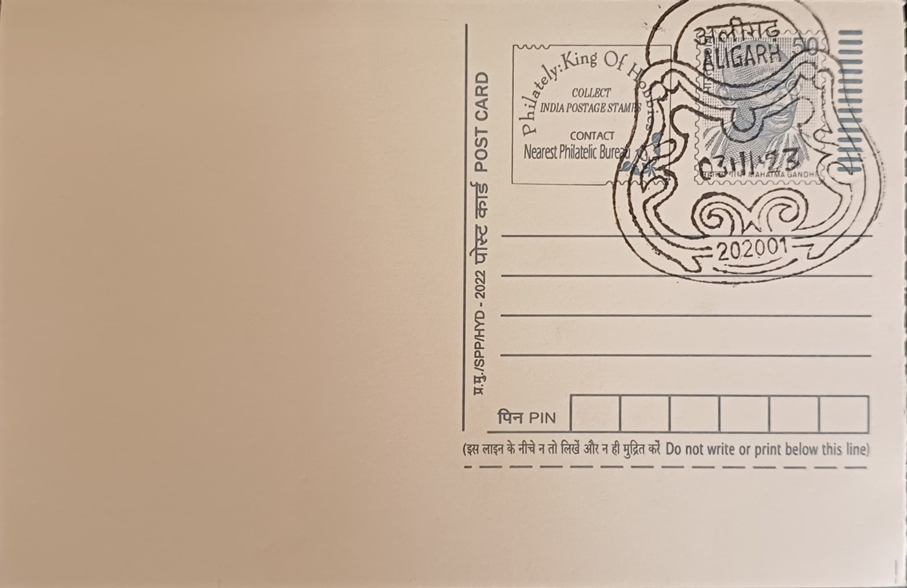

Aligarh Lock
अलीगढ़ ताला


Aligarh's identity as 'Tala Nagari', or City of Locks, traces to the 1870s, when the British trading firm Johnson & Co. began importing English locks into the town for sale across northern India. Recognising the ready availability of skilled metalworkers descended from the region's older tradition of arms and blade making, the firm shifted around 1890 from importing finished locks to organising small-scale local manufacture, subcontracting work to local artisans and workshops. This transition from imported goods to indigenous production, built on pre-existing metalworking skill rather than starting from nothing, is generally credited as the true founding moment of Aligarh's lock trade, one that within a few decades displaced imports almost entirely from the domestic market.
The lock trade quickly became Aligarh's defining economic activity and one of India's notable examples of a geographically concentrated cottage industry. By the 1920s, colonial records show the town producing roughly half a million locks annually, and the sector received a further institutional boost in 1926 when the British administration set up a metal-training workshop specifically to formalise and standardise local lock-making skills. Today the industry is commonly cited as supplying around three-quarters of India's locks, generating an estimated annual turnover near Rs 4,000 crore through a base of several thousand registered units, alongside a larger number of small unregistered household workshops, making it a rare case of a single town dominating an entire manufactured product category nationally.
Production remains rooted in traditional metal-casting craft, with brass, typically an alloy of roughly 60 percent copper and 40 percent zinc, sand-cast into locks and fittings using techniques passed down through family workshops over generations. Alongside brass locks, Aligarh manufacturers also produce iron-bodied padlocks, multi-lever mechanisms, and hardware such as door fittings and rolling-shutter locks, generally organised through a dispersed network of small units each specialising in one stage of casting, filing, engraving, or assembly rather than a handful of large integrated factories. This fragmented, artisan-based structure has allowed the craft to persist largely unchanged in its basic methods even as demand and materials have shifted over the decades.
Among Aligarh's specialities are novelty and puzzle locks, including seven-lever padlocks, locks requiring keys inserted through concealed or false keyholes, and elaborately engraved decorative pieces, alongside functional handcuff-style locks once supplied for institutional use. These intricate variants, prized by collectors and often exported, illustrate a craftsmanship dimension to the industry beyond ordinary security hardware, and it was this combination of scale and distinctive local technique that supported Aligarh locks receiving a Geographical Indication tag in 2023, under an application titled 'Tala Nagari Audyogik Vikas' first filed in 2019, legally restricting the 'Aligarh Lock' name to products genuinely made in the district.
The city's lock heritage has also drawn formal institutional recognition beyond the GI tag: authorities have approved plans for what is billed as India's first dedicated lock museum in Aligarh, an approximately Rs 28 crore project under the Aligarh Nagar Nigam intended to display historical and regional lock varieties while running workshops to pass the craft on to new entrants. Even as the industry contends with competition from cheaper factory imports and electronic locking systems, this push toward documentation and skill revival, layered onto an already GI-protected trade employing tens of thousands of artisans, keeps Tala Nagari's centuries-old craft actively linked to Aligarh's present-day economic and cultural life rather than treating it as a purely historical curiosity.
| Date of Introduction | November 3, 2023 |
|---|---|
| Address | Senior Postmaster, |
| Aligarh HO, | |
| Aligarh (dt.), Uttar Pradesh - 202001. |